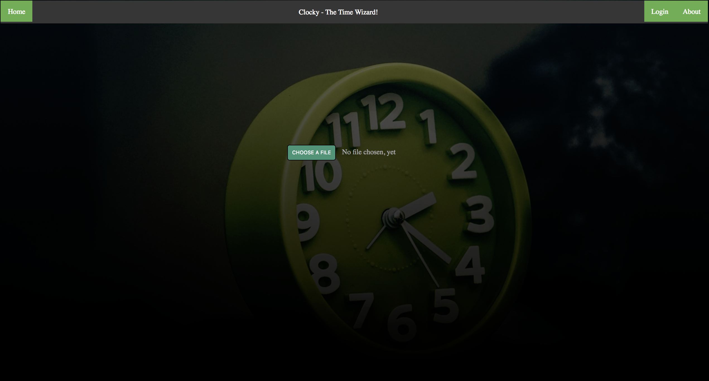

Erika

Erika Description
Erika is an AI financial assistant, that helps investors make quick decisions by providing open source data such as company data, economic data. This Application is written using the Angular Framework for Front-end functionality, and utilizes a Python3 backend running a Flask based server. The main AI component utilizes an in-house based NLP model, that is freely available on github, and communicates with python through an internal ubuntu server.
Status: On-going
Github Link: https://github.com/brandon-hiles/erika
Clockly - The Time Wizard
Clockly Description
Time Management is an important skill to master, and managing your available is important for understanding where you spend most of your time. This may be espically useful, when working on projects, and understanding whether you are reading documentation, actually writing code, standup meetings, etc. and managing all of this information can be challenging. This problem can be solved with this application called Clockly. Clockly is a lightweight javascript application that takes in either pre-defined csv files and/or manually inserted data and helps track time analytics by providing reports either in browser or through email services.
Status: On-going
Try out this Application: http://www.brandonhiles.com/apps/time-wizard
Github Link: https://github.com/brandon-hiles/time-wizard
Chexpiry

Chexpiry Description
Chexpiry is an application that tackles the issue of sustainability through the minimization of food wastage. This application utilizes computer vision AI models provided by google to analyze food, mainly produce, to understand expiration dates by analyzing color tones of said produce. This application was developed for UofT Hacks VI, the architeture of this application was written using the Bootstrap library for the frontend, and using a python3 backend using Flask. The Application was hosted through Heroku.
Status: Complete
Try out this Application: http://www.brandonhiles.com/apps/chexpiry/
Github Link: https://github.com/brandon-hiles/Chexpiry